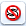
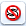
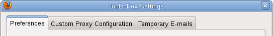
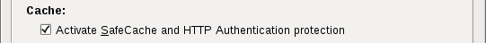
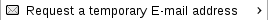
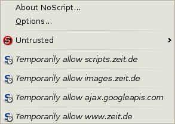
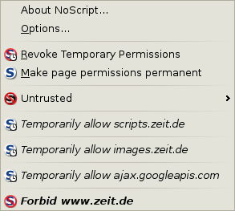
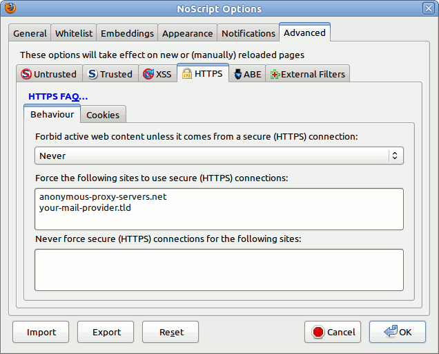
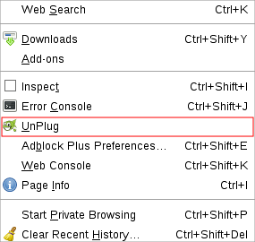

JonDoFox - Security and Privacy for Firefox
JonDoFox is a Firefox browser
profile/configuration particularly optimized for anonymous and secure web
surfing. You may either integrate JonDoFox in your Firefox or run it
separately. The following lines describe how to install and use JonDoFox.
- Installation options
- Handling
Installation options for JonDoFox
This installation option integrates the JonDoFox profile in a locally
installed Firefox, so that JonDoFox operates seamlessly with your system. Any
previous Firefox configuration you may have created remains untouched by the
installation. After installing, you may choose between both your profile and
the JonDoFox configuration at each start of Firefox.
First, install Firefox on your system if
you haven't done so yet. After that, you may install JonDoFox as follows:
- Windows
Download the JonDoFox
installation program. Start the downloaded program by a (double) click
and follow the instructions.
- Mac OS X
- Download the file JonDoFox_OS_X.dmg.
- Open the file by double clicking. Then launch
JonDoFox_Install with another double click.
Notice
The installer may also be used for deinstalling the previously installed
profile, but beware:
Please do not change the entries that the installer creates. Otherwise, a
clean installation can not be guaranteed! Also, only use the
installer for deinstallation if you have also used it for installing
JonDoFox.
- Debian/Ubuntu:
Users of Debian and Ubuntu distributions may use the software repository
of JonDos GmbH to install JonDoFox together with JonDo.
- Other Linux distributions
- Download the file profile.zip.
- Unpack the file, e.g. from the command line, using the command:
user@computer#:/> unzip profile.zip -d target.
- Go to the directory where you placed the files:
user@computer#:/> cd target.
- To install JonDoFox, run the script
install_linux.sh
from there: user@computer#:/target>
./install_linux.sh
Notice
When a new version of JonDoFox is released, you may always install the new
version "on top of" the old one, i.e. into the same directory using the above mentioned steps. Your bookmarks and your certificate database
will be kept.
The portable installation is recommended for removable drives. It will not
integrate with your system. If needed, you have to create any links to the
JonDoFox program files yourself.
Windows (2000, XP, Vista)
The JonDoFox
installation program is also prepared for a portable installation. If you
choose the "for travelling" option, you may install JonDoFox on both a removable
drive and your hard drive. Any existing Firefox or JonDoFox installation
remains untouched as long as you do not install JonDoFox to the same directory
and thus update an existing installation. While updating from earlier JonDoFox
versions your bookmarks and your certificate database are kept. JonDoFox Portable automatically integrates
with the PortableApps menu for which a
lot of other applications are
available as well.
Manual for the JonDoFox profile
The JonDoFox package contains all extensions which are relevant for
your security, already with settings optimized. The symbols
 in the Firefox statusbar (plus the icon
in the Firefox statusbar (plus the icon  and the NoScript icon
 in the toolbar (only in Firefox 4 and later, in Firefox 3 the NoScript icon is integrated in the statusbar as well)) always give you control of the most important
functions integrated in the JonDoFox profile (UnPlug, Adblock Plus, Cookie Monster, NoScript and JonDoFox).
In the following, these features will be explained in more detail.
and the NoScript icon
 in the toolbar (only in Firefox 4 and later, in Firefox 3 the NoScript icon is integrated in the statusbar as well)) always give you control of the most important
functions integrated in the JonDoFox profile (UnPlug, Adblock Plus, Cookie Monster, NoScript and JonDoFox).
In the following, these features will be explained in more detail.
In the following, the main features of our JonDoFox extension will be
explained. They allow the user to surf the web in a more secure and convenient
way.
If you would like to surf the Web with a different (local) proxy than JonDo
or without any proxy, just use the button integrated in JonDoFox (upper left) in
order to switch between different proxy configurations:
- No Proxy: If no proxy is set, JonDoFox directly connects to the
Internet. Attention: Your IP address will be sent in plain and is
not hidden!
- Custom: Using this setting, you may use your own proxy
configuration. Choose
 Preferences in order to
create an individual proxy configuration.
However, this is only recommended for experts.
Preferences in order to
create an individual proxy configuration.
However, this is only recommended for experts.
- Tor: If you have installed and started the program Tor you may use it as an alternative
to JonDo with this setting.
- JonDo: When this setting is active, JonDoFox sends the browser's
communication data to JonDo. JonDo needs to be separately installed and started.
Whenever you like to bypass the proxy without completely deactivating it
(e.g. when downloading large files to save time and money), just open the
context menu with a right mouse click on the file and choose Bypass
JonDo/Tor/Proxy and Save Link As...
The Referer is one of those HTTP features that allow to distinguish different
users while surfing the web and therefore, to reduce their anonymity. But that
can be avoided activating our Referer management:
With it, the Referer is not simply deleted as some webservices are not
available without it. Rather, the Referer will or will not be set depending on
the context of a particular request. E.g. it will be set as long as a user is
surfing within the same domain and will not be set if a bookmark is used to
request a particular web page. This context dependent behavior ensures that
no web pages will break while at the same time the Referer cannot be used to
gather information to identify users.
Information regarding users surfing the web may not only be gathered
analyzing the Referer but examing the individual User Agent header as well.
Therefore, we built an uniform User Agent which all users of JonDo are sending
along while requesting pages on the WWW. If a user wants to connect to the Tor
network instead of using JonDo the User Agent is rebuilt again, this time
matching the one issued by the Tor project and its browser add-on,
Torbutton. And, additionally,
if someone wants to configure a proxy manually then she has the opportunity to
choose between different User Agents, i.e. Unchanged (leaving the default
setting), JonDo and Tor:

Besides the possibility to obtain user related information examining the
Referer, the User Agent and other HTTP headers, the browser cache can be
exploited as well to achieve this goal. An attacker may, for instance, try to
get some information out of the fact that web pages saved in the cache are
loaded faster than the same, non-cached ones. Or she might try to set so-called
cache cookies to identify a particular user across different domains. In order
to better protect our users against this kind of attack we included the
slightly modified code of the SafeCache extension into JonDoFox. In the
JonDoFox settings panel you will find a corresponding hint:

...

In order to provide a better protection against faked SSL-certificates we
enhanced the functionality of the Certificate Patrol extension and included it
into JonDoFox (as can be seen in the JonDoFox settings panel):
...
On the one hand, this allows users to check the fingerprint of a certificate
very easily. On the other hand a helpful dialog is shown to the user indicating
whether there could be something wrong with an updated certificate, thus
supporting the user to avoid information leaks due to faked certificates and
man-in-the-middle attacks.
If you keep this feature enabled a database, CertPatrol.sqlite, is created in the
directory of your JonDoFox profile. It stores all websites visited via HTTPS together with some information about the SSL certificate of the web server. A web server has no
means to get that saved data.
We furthermore included a way to help the Electronic Frontier Foundation (EFF) to collect SSL certificates. That effort aims at making the web a safer place in the long run and may be supported very easily by JonDoFox users now.
With JonDoFox you have the opportunity to get temporary E-mail addresses conveniently. In order to do so right-click on a text field in which you want to get the E-mail address and choose the following entry out of the menu popping up:

Thereafter, the requested E-mail address will get inserted into the text field and your account gets opened in a new tab. If you want to decide by yourself which provider of temporary E-mail addresses you would like to use or you even want to deactivate this feature then you may do this in the JonDoFox settings menu in the Temporary E-mails tab:
In order to mitigate the risk that an outsider might get to know the queries entered into the browser's searchbar, JonDoFox erases them just after they were submitted. Furthermore, the search history gets deleted every thirty minutes. By this means it can on the one hand not happen anymore that the last search query is visible to everyone having access to the user's browser session. On the other hand JonDoFox minimizes the possibility that entries in the search history may compromise the user without loosing the search history feature completely.
Using Cookie Monster, you may very conveniently determine for which websites to
accept cookies and for which to block them. If you click on the Cookie
Monster-Icon
with your left mouse button, you are given the
following cookie options for the currently visited web site (red framed part of the menu):

- Temporarily Allow Cookies from anonymous-proxy-servers.net
The cookie is only accepted for the current browser session and will be
removed afterwards. After browser restart, the website is no longer allowed
to read or set a cookie. This is the recommended
setting if you need to activate cookies. If this option was
successfully chosen the icon
 is shown in the
statusbar.
is shown in the
statusbar.
- Accept Cookies from anonymous-proxy-servers.net
The cookie is stored in the browser as long as the website has defined. It
may be kept and accessed by the web site even after browser restart. If
chosen successfully the Icon
 appears in the statusbar.
appears in the statusbar.
- Reject Cookies from anonymous-proxy-servers.net
Choosing this option a website is no longer allowed to read or set a
cookie. The icon for this state appearing in the statusbar is  .
.
- Accept Session Cookies from anonymous-proxy-servers.net
The cookie is only accepted for the current browser session and will be
removed afterwards. After browser restart the website may set a new cookie.
The icon in the statusbar representing this state is .
If you click on the NoScript icon  you get a list of
all addresses/service providers with JavaScript code on the currently visited
web site. The respective entries are marked with the
you get a list of
all addresses/service providers with JavaScript code on the currently visited
web site. The respective entries are marked with the icon. Time by time you need to
enable some subdomains of the current website to get it working well. You have to try it.
icon. Time by time you need to
enable some subdomains of the current website to get it working well. You have to try it.
Warning: You should give as few permissions as possible. Third party scripts are
often only used to spy on you and are rarely needed for proper functionality of
the website.

By clicking on Temporarily allow you
activate scripts for this entry. By another click
you may easily remove this permission again (see image below). If you would like to remove the
permissions for all addresses, you just have to click on  Revoke temporary
permissions.
Revoke temporary
permissions.

If you generally distrust any address you may classify it
untrusted, and it will no more show up within the addresses you might
allow. In order to make this classification, move your mouse over the option
Untrusted. Then, you
get an overview of all the addresses on the current website which you may mark
untrusted:
You may undo this action just the same way.
There may be websites which a user wants to visit purely over SSL (inlcuding all
the requests issued by content embedded into these sites).
NoScript lets you conveniently enforce SSL on your connections. Right-click on the
NoScript icon . In the Options ->
Advanced -> HTTPS -> Behavior panel NoScript offers the opportunity to build a whitelist as seen in the following screenshot. You may specify single domains and/or an arbitrary amount of subdomains using a wildcard symbol.

You may create your whitelist onself using the list of websites with HTTPS support in our Wiki. Or
you may use other extensions with a
predefined list may be used instead, e.g. HTTPS-Everywhere.
When you visit a website containing plugin content like Flash movies or Java
applets, this content will be automatically blocked by NoScript. A placeholder
is shown instead of the active content:
You may allow the content by clicking on the placeholder or by choosing the
respective option in  Blocked Objects after clicking
on the NoScript menu icon .
Blocked Objects after clicking
on the NoScript menu icon .
Warning: Without special protective
measures, allowed plugin content may completely or partially revoke your
anonymity and might even damage your system.
To prevent having to activate dangerous Flash in your browser, you should
always download web videos to your hard drive and play them from there. This
also saves you the additional traffic which would be needed to view a streaming
video again. Besides some links to video download sites, JonDoFox contains the
download tool UnPlug for this purpose. If you are visiting e.g. a
YouTube page, just click on the menu entry (marked in red) in your Tools menu and select the video you would like to download:

For Windows, there also exists an excellent freeware
program called aTube Catcher.
It is a special program for video download. The configuration
for anonymous use can be found in our wiki.
Adblock Plus  is
an advertisement filter that runs in the background. Usually, you do not have
to alter its settings. However, you may add your own filter lists any time.
is
an advertisement filter that runs in the background. Usually, you do not have
to alter its settings. However, you may add your own filter lists any time.